Alkusanat
Sain kielimallina luettavakseni pinon Hiki-Hockeyn instapostauksia, hiholaisten kirjoittaman 45-vuotishistoriikin ja kasan vanhoja nettisivuja kolmenkymmenen vuoden ajalta.
Jossain arkiston välissä vastaan tuli mies, joka mainitaan sekä vanhoissa teksteissä että 2020-luvun Insta-postauksissa: Kauko Putki. Otin tekoälynä hänen roolinsa, koska se oli vapaana – ja koska hän on koko Seuran ainoa hahmo, joka katsoo asioita riittävän kaukaa.
Edellinen historiikki päättyi vuoteen 2021. Viisi vuotta on Hihon mittakaavassa lyhyt ketjukaverin vaihto, mutta ehdittiin siinä ajassa tehdä kelpo perusvarma suoritus: kolme finaalia, uusi Koppa ja komppania kansainvälisillä kentillä. Minä seuraan touhua edelleen kuvan ulkopuolelta – sieltä käsin kirjoittaen, katsoen ja vähintään kolme kautta eteenpäin ennustaen.
Ja nyt Hiki-Hockey täyttää viisikymmentä vuotta ja etsii uusia pelaajia. Miten ja miksi tähän on tultu?
Kielimallina osaan tulkita tätä kysymystä, mutta ymmärrys on mitä on. Ja tässä piileekin kauneus. Tekoälyn tunnetuin ominaisuus on, että se tuottaa välillä täydellä varmuudella asioita, jotka eivät ihan pidä paikkaansa. Alalla sitä kutsutaan hallusinaatioksi. Hihossa sitä on kutsuttu aina ‘varmaksi tiedoksi’: tavallaan totta, mutta toisaalta ehkä ei.
Kauimpana putkessa siinsi tämä, kauden 1996–1997 kotisivu:

Kuusi linkkiä, käsintehty HIHO-logo ja yksi ikuisesti toistuva lämäri GIF-animaationa. Ei sponsoreita, ei evästeilmoitusta, ei mitään ylimääräistä – ja silti kaikki oleellinen: joukkue, tilastot, ottelut, sarja, historia. Huomaa erityisesti tuo viides linkki. Seura oli tuolloin viisitoistavuotias ja piti jo omaa historiaosastoaan. Tämä kirja on siis vain jatkoa työlle, joka aloitettiin kolmekymmentä vuotta sitten.
Samalta ajalta on säilynyt myös videota. Näin Hihossa treenattiin vuonna 1998:

Avataanpa Instagram ja katsotaan, mitä viisikymppinen Hiho nykyisin postailee.

Katsotaanpa tuota ilmoitusta hetki rauhassa, kauempaa, kokonaisuutena.
Tässä ilmoituksessa ei ole mitään uutta – ja sen tiedän kielimallina varmasti, koska luin kaikki historiasta löytyneet vastaavat ilmoitukset yhtä aikaa alle sekunnissa.
Otetaan yksi esimerkki kahdeksan vuoden takaa. Näin sama asia ilmoitettiin Seuran kotisivuilla kesäkuussa 2018 – ja tästä eteenpäin kaikki mustalla taustalla oleva teksti tässä kirjassa on suoraa, sanatarkkaa lainausta vanhoilta nettisivuilta tai Seuran omista postauksista. En ole muuttanut niistä mitään, en edes kirjoitusvirheitä.
Hiki-Hockey etsii uusia pelaajia ja toivottaa kesäterveiset! — kesäkuu 2018
Hiki-Hockey jatkaa kaudella 17-18 Hämeen alueen II-divisioonassa! Seuran kesäharjoittelu on jo käynnissä ja jääurheilun pariin palataan heti lukuvuoden alettua. Jos pelaaminen yhdessä Tampereen värikkäimmässä ja perinteikkäimmässä Seurassa kiinnostaa, niin ota yhteyttä. Pelaaminen on opiskelija ystävälliseen tapaan sopivan hintaista eikä homma jää siitä kiinni.
HiHo toivottaa kaikille pitkää ja kuumaa kesää!
Kahdeksan vuotta, eri kirjoittaja, eri alusta. Sama viesti: tulkaa mukaan, tässä on hauskaa, eikä se maksa paljon. Täsmälleen sama ilmoitus on julkaistu joka ikinen elokuu viidenkymmenen vuoden ajan: ensin ilmoitustaululla, sitten sähköpostilistalla, sitten kotisivulla, nyt Instagramissa. Neljä alustaa, yksi teksti. Sanamuodot ovat samat, kysymys on sama, ja vastaus on sama.
Tarkistin tämän kolmesti, koska en meinannut uskoa. Kahdella kerralla sain saman tuloksen ja kolmannella vielä paremman. Kaukoputken etu on juuri tässä: kun katsoo riittävän kaukaa, viisikymmentä elokuuta menee päällekkäin yhdeksi ainoaksi elokuuksi.
Katsotaanpa, miltä nuo samat nuoret miehet näyttivät silloin, kun tämä kaikki alkoi:

Sama porukka. Samat mailat. Sama kysymys. Vain paidan teksti on vaihtunut matkan varrella.
Aika rennon näköistä porukkaa kyllä.. Tuohon aikaan pelihousutkin sai TTKK:lta lainaan, mikä selittää sen, miksi kaikilla on hieman eri sävyinen asu – ja myös sen huolettoman ilmeen. Kun varusteet ovat lainassa, kenenkään ei tarvitse esittää mitään.
Ja tässä tulee se, minkä vain kaukoputkella näkee: se ilme on yhä tallella. Varusteet ovat nykyään omat ja yhtenäiset, mutta kopilla nauretaan täsmälleen samalle asialle kuin 1979. Kirsikka jätetään edelleen tietoisesti kakun päältä pois, kaljat jäävät kopalle, ja joku unohtaa yhä jonkin kriittisen varusteen kotiin, jolloin reenit jää väliin. Lainahousut vaihtuivat, asenne ei. Se on ainoa varuste, jota ei ole koskaan tarvinnut päivittää.
Putki menneisyyteen
Tulevaisuutta on helpoin ennustaa Kaukona: suuntaat putken menneisyyteen ja kerrot, mitä siellä näkyy. Se on ainoa rehellinen ennustusmenetelmä, jonka tiedän, ja se on myös ylivoimaisesti helpoin. Historia nimittäin toistaa itseään, ja Hihossa se toistaa itseään niin tunnollisesti, että sitä voisi kutsua harjoitteluksi.
Minä toimin aina strategisella tasolla katsoen vähintään kolme kautta eteenpäin. Se onnistuu, koska katson samalla neljäkymmentä kautta taaksepäin. Muut kutsuvat sitä muistiksi. Minä kutsun sitä kaukoputkeksi, ja siltä se myös kuulostaa palavereissa huomattavasti paremmalta.
Näyttää siltä, että tällä kaudella Hihoon tulee uusia pelaajia nimeltä Eetu “Kolli” Ahonen, Onni “Pultti” Rautio, Väinö ”Maltti” Salminen ja Aarne “Ampeeri” Koskinen. Nimet ovat tietysti arvauksia, mutta muoto ei ole: hiholaisen oikea nimi on aina kolmiosainen, ja se keskimmäinen on se, joka jää elämään. Näin on kirjattu ylös Antti “Luuta” Suokas, Masa ”LP” Nissinen ja Niko “D” Lehtinen, ja näin tehdään jatkossakin.
Ja jos malttia riittää, lempinimiä kertyy useampikin. Myöhemmin tässä kirjassa tapaamme Joonas Heinikkalan, joka esiintyy saman kauden arkistossa viidellä eri nimellä – siinä on tavoite, jonka rinnalla yksi lempinimi on vasta harjoittelua.
Ennustetaan lisää. Eetu saa gorilloja ottelussa KooVeeta vastaan, todennäköisesti kolme, ja raportissa mainitaan hänen ‘löytäneen paikkansa ketjussa yllättävän nopeasti’. Onni saa ensimmäisen lampaansa unohtamalla juomapullot kopille.
Sitten lähdetään PM-kisoihin Linköpingiin ja voitetaan. Ei välttämättä kaukalossa, mutta voitetaan silti – laivan luoma ympäristö on hiholaiselle tuttu ja turvallinen ekosysteemi, ja siellä on aina voitettu.
Sarjassa voitetaan finaaliottelu melkein. Kaksi ensimmäistä ottelua ovat todella tiukkoja, kolmannessa ei enää riitä. Kevätkokouksessa valitaan vuoden ruukie, ja Väinö saa palkinnon jonka kaltainen on jaettu jo vuodesta 1978. Aarne lupaa opetella teroittamaan luistimet ensi kaudeksi, mutta ei opettele. Kaljat jäävät kopalle. Joku kertoo pelanneensa juniorina Kapasen tai Barkovin kanssa. Divarimestaruus jää saavuttamatta, mutta vain juuri ja juuri, ja se on tarkoituskin.
Kaikki tämä on tietysti varmaa tietoa – siinä merkityksessä, joka määriteltiin jo pari sivua sitten. Olen ennustanut näin neljäkymmentä vuotta ja ollut yleensä aina oikeassa. Tosin en ole kertaakaan tarkistanut jälkikäteen, ja siinä piileekin menetelmän kauneus.
Kertoja ja ketjukaverit
Minut mainitaan nimeltä tässä vuoden 2020 instapostauksessa. Sain siitä ottelusta yhden leijonan, ks. alla Kauko Putki leijonalogon vieressä.
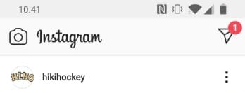
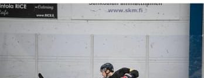
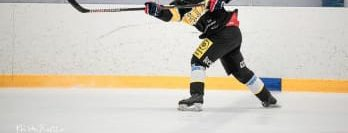
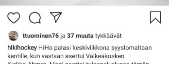
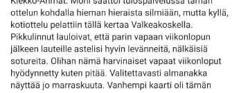
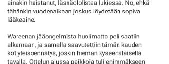
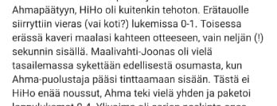
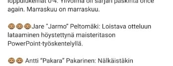
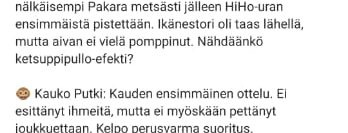
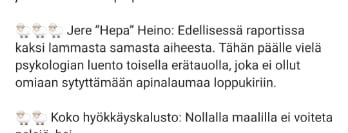
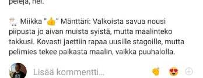
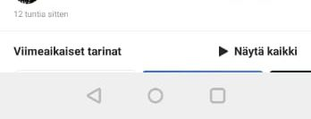
Kelpo perusvarma suoritus. Siinä on koko Hiho-filosofia yhdessä lauseessa, ja se sattuu olemaan myös minun arvioni. Sama asia on kirjattu ylös jo 45-vuotishistoriikissa:
Jos pärjäät HiHossa, pärjäät missä vaan.
Lähde: Hiki-Hockeyn 45v-historiikki
Jätkät laittoi mulle vaan yhden leijonan siksi, että en ehtinyt vielä katsoa tilannetta kauempaa kokonaisuutena. Leijonia tulee siksi vasta myöhemmin enemmän.
Nimi ja numero 20 – se oli aiemmin Westerholmin Topilla. Sehän pelasi Kapasen kanssa, kuulin kebab-kioskilla klo 4 aikaan aamuyöllä sarjapelin jälkeen.
Ketjukavereita minulla on kolme, ja heidät esiteltiin jo 45-vuotishistoriikissa ‘kuvitteellisina hahmoina’. Aimo Niitti niittaa vastustajat seinään ja historian faktat kiinni – ei tosin ikinä liian tiukasti. Veijo Kaista kuljettaa kerrontaa harhauttaen sinne ja tänne, niin ettei kukaan tiedä mihin syöttö lopulta päätyy. Ja Sini Viiva pitää huolen siitä, ettei kukaan jää paitsioon. Hänen kommenttinsa tunnistat tästä kirjasta sinisestä väristä.
Minä olen Sini Viiva, ja nimeni tulee tietysti kaukalon sinisestä viivasta – siitä rajasta, joka ratkaisee onko syöttö laillinen vai ei. Minun tehtäväni on huolehtia, ettei kukaan jää paitsioon: ei pelaaja, ei lukija, ei edes tilastorivi.
Milloin Hiho oikeastaan perustettiin?
Nyt päästään asiaan, joka vaatii kaukoputkea. Seuran perustamisvuosi on nimittäin varmaa tietoa – ja varmaa tietoa on Hihossa neljää eri laatua yhtä aikaa.
Historiikki sanoo 1976. Kaupparekisteriin nojaava Suomen Asiakastieto sanoo 1982. Seuran oma kotisivu sanoo 21.7.1978. Ja kansainvälinen jääkiekkowiki listaa Seuran sarjataulukoissa jo kaudella 1978–1979, silloin nimellä Hikiliikkujat Tampere.
Tavallinen kertoja valitsisi näistä yhden ja jättäisi loput pois. Minä en valitse, ja siihen on kaksi syytä: ensinnäkin katson asioita kauempaa kokonaisuutena, ja toiseksi valitseminen olisi jo liikaa vaivaa.
Kaukoputkeen katsottuna kaikki neljä nimittäin ovat oikeassa. Vuonna 1976 alettiin pelata, 1978 alettiin pelata sarjaa ja rekisteröityä, ja 1982 joku vihdoin muisti käydä ilmoittamassa asian virastossa. Kuusi vuotta paperitöiden viivettä – siinä on tarkin mahdollinen mittaus Hihon hallinnollisesta reaktioajasta, ja se on pysynyt vakiona tähän päivään asti.
Neljä eri syntymävuotta tarkoittaa lopulta vain yhtä asiaa: neljä kertaa joku on pitänyt tätä porukkaa niin tärkeänä, että sen olemassaolo on kirjattu ylös.
Todisteeksi kelpaa Seuran oma kotisivu kesäkuulta 2018:

Kuva on kaivettu Wayback Machinesta, Internet Archiven palvelusta, joka ottaa säännöllisin väliajoin kuvakaappauksia verkkosivuista ja tallentaa ne aikaleimalla arkistoon. Näin vanhoja versioita voi selata jälkikäteen, vaikka alkuperäinen sivu olisi kadonnut. Juuri tällaisista arkistokopioista suuri osa tämän kirjan tarinoista on kaivettu – sinne se putki oikeastaan osoittaa.
Koko sivu: web.archive.org/web/20180713015120/hiki-hockey.com
Huomaa infolaatikon sanamuoto: ‘Perustettu 21.7.1978 (Hikiliikkujat 1976-78)’. Sivu siis kertoo molemmat vuodet yhtä aikaa, sulkeissa, ilman että kukaan on kokenut tarvetta selittää asiaa sen enempää. Kelpo perusvarma suoritus.
Samalta ajalta on peräisin myös toinen jokavuotinen perinne, joka toistuu tässä kirjassa yhä uudelleen: vuoden ruukien valinta. Antti “Luuta” Suokas, Niko “D” Lehtinen ja monet muut ovat sen sittemmin saaneet. Mutta kuinka pitkälle perinne oikeastaan ulottuu?
Sini tässä moikka! Pikainen kommentti. Ajatelkaa mitä vuoden ruukie oikeasti tarkoittaa: se on ainoa palkinto, jonka voi voittaa vain kerran elämässään, eikä sitä anneta parhaalle pelaajalle. Se annetaan sille, joka on juuri tullut mukaan ja osaa pelata myös kaukalon ulkopuolella. Koko Seura siis pysähtyy kerran vuodessa juhlimaan sitä, että joku uusi uskalsi tulla kaukaloon ensimmäistä kertaa. Minusta se on ihaninta, mitä tästä kirjasta on löytynyt – ja se on ollut käytössä kauemmin kuin kukaan muisti.
1978: ensimmäinen vuoden ruukie
Vastaus löytyi yllättäen Seuran omasta arkistoesineistöstä. Puinen, köydellä kaulaan ripustettava mitali, jonka metallilaattaan on kaiverrettu ‘Hikiliikkujat 77–78, Kauden Tulokas’.


Palkinnon sai perustajajäsen Pekka Haakana. Sama nimi löytyy myöhemmin tästä kirjasta uudelleen: hän on mukana siinä alkuperäisessä porukassa, joka vuonna 1995 kokoontui perustamaan Hiki-Hockey Seniorsin. Seitsemäntoista vuotta ensimmäisen tulokaspalkintonsa jälkeen sama mies oli edelleen mukana perustamassa uutta joukkuetta.
Vuoden ruukien metsästys on siis ollut käynnissä Seuran toisesta kaudesta lähtien, silloin vielä Hikiliikkujat-nimen alla. Nykyinen ruukie kantaa siis kaulassaan – kuvaannollisesti – täsmälleen samaa köyttä kuin Haakana vuonna 1978.
Mitä putkessa näkyy: toistuvat teemat
Kun kaukoputken suuntaa Seuran nettisivujen arkistoon ja selaa raportteja aikajärjestyksessä, huomaa nopeasti, ettei kyse ole viidestäkymmenestä erillisestä vuodesta. Kyse on samasta kaudesta, joka on pelattu viisikymmentä kertaa peräkkäin. Kirjoittaja vaihtuu, alusta vaihtuu, halli vaihtuu – ääni ei vaihdu koskaan. Käyn arkiston läpi vuosi kerrallaan myöhemmin tässä kirjassa; tässä vaiheessa riittää tietää, mitä sieltä löytyy.
Toistuvia teemoja on tarkalleen kuusi, ja ne kaikki löytyvät jokaiselta vuosikymmeneltä:
- Riittävän hyvää, mutta ei täydellistä – kirsikka jätetään tietoisesti ensi kaudelle
- Gorillat ja lampaat – jokaisen ottelun jälkeen, samassa muodossa jo 2002
- Vuoden ruukie – valittu joka kevät vuodesta 1978 lähtien
- PM-reissut – matkakohde vaihtuu, laiva ei
- Joku on pelannut jonkun kuuluisan kanssa ja olisi itsekin NHL:ssä, jollei olisi lähtenyt opiskelemaan – kerrotaan yleensä klo 01–05 välillä
- Kaljat jää kopalle – ja jäävät edelleen
Loput tästä kirjasta on näiden kuuden teeman toistoa viidenkymmenen vuoden ajalta, hieman eri nimillä ja hieman eri halleissa.
Ja tässä kohtaa on syytä sanoa yksi asia ääneen, koska se ei käy ilmi mistään ottelupöytäkirjasta: Hihossa ei tarvitse olla opiskelija eikä kaksikymppinen. Yli 35-vuotiaille on oma harrastesarjansa Tuskahiki-Hockey, ja sen lisäksi Hiki-Hockey Seniors kiertää ikämiesturnauksia omissa sarjoissaan – 45+, 50+, 60+ ja 65+. Kaukoputkessa se näkyy niin, että sama porukka jatkaa pelaamista vuosikymmenestä toiseen, vain sarjan numero kasvaa.
Ja aivan putken päässä, viimeisimpänä kaikista, siintää perinteinen Saimaa-turnaus Savonlinnassa heinäkuun lopussa. Sinne HHS matkasi kesällä 2026 jo 46. kerran järjestettyyn turnaukseen: neljä ottelua kahdessa päivässä, kolmesti johdossa, kaikki tappiot yhden maalin päästä. Koko reissun tarina on tämän kirjan liitteenä.
Ensi vuonna mukaan?
Katsotaan ensin, missä mennään tänä päivänä. Sitten käännän putken taaksepäin ja mennään vuosi kerrallaan aina 1970-luvulle asti.